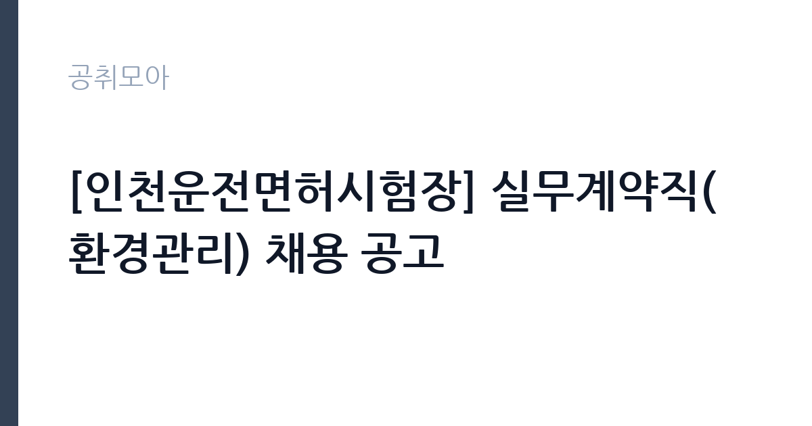

[공공기관] [인천운전면허시험장] 실무계약직(환경관리) 채용 공고
한국도로교통공단 · 인천 · 마감 2026-09-30 (D-8) · 출처 잡알리오

한눈에 보는 모집 조건
| 기관 | 한국도로교통공단 |
|---|---|
| 공고명 | [인천운전면허시험장] 실무계약직(환경관리) 채용 공고 |
| 고용형태 | 정규직 |
| 근무지 | 인천 |
| 게시일 | 2026-09-23 |
| 마감일 | 2026-09-30 (D-8) |
지원자격, 이렇게 읽으세요
- 공공기관 채용공시
- 세부 조건은 원문 공고문 확인
지원 자격은 연령과 성별, 학력에 제한이 없습니다. 남성의 경우 병역의무를 마쳤거나 면제된 분이 지원하실 수 있습니다. 최종 합격자 발표 후 입사예정일인 2026년 10월 23일부터 근무가 가능해야 합니다. 공단 인사규칙의 결격사유에 해당하지 않아야 하며, 세부 결격사유는 원문에서 확인하시기 바랍니다. 환경관리 업무 특성상 관련 시설관리나 미화·청소 분야 경험이 있다면 자기소개서에 구체적으로 기술하시기 바랍니다. 제출서류와 접수방법은 공단 채용 게시판의 원문에서 확인하시기 바랍니다.
이 공고의 포인트
첫 번째 포인트는 응시 장벽이 낮다는 점입니다. 연령·성별·학력 제한이 없어 경력과 스펙보다 근무 가능 여부와 성실함이 중요합니다. 두 번째로 인천운전면허시험장이라는 고정 사업장에서 근무하므로 출퇴근이 안정적입니다. 세 번째로 한국도로교통공단은 전국 조직을 가진 준정부기관으로, 실무직 근무 경험이 향후 공단과 유관 기관 채용에 도움이 될 수 있습니다. 입사예정일이 확정되어 있어 합격 후 일정을 세우기에도 좋습니다.
전형은 어떻게 진행되나
전형은 서류전형과 면접전형으로 진행되는 것이 일반적이며, 세부 일정은 공단 채용 게시판의 원문에서 확인하시기 바랍니다. 접수 기간이 일주일 정도로 짧으므로 원문을 확인하는 즉시 지원서를 작성하시는 것이 좋습니다. 서류전형에서는 지원서 기재의 성실성과 근무 가능 여부가 핵심이 되며, 면접에서는 환경관리 업무의 이해와 민원 응대 태도를 평가할 수 있습니다. 입사예정일이 10월 23일로 정해져 있어 전형이 빠르게 진행될 것으로 보입니다.
원문에서 확인한 전형 방식
[공통사항] - 연령, 성별, 학력 제한 없음 - 남성의 경우, 병역의무를 마친 자 또는 면제 된 자 - 최종 합격자 발표 후 입사예정일(2026. 10. 23.)로부터 근무가능한 자 - 공단 인사규칙 제18조에 따른 결격사유가 없는 자
이런 분께 추천해요
- 인천 지역에서 안정적인 근무를 원하는 구직자
- 시설 환경관리나 미화·청소 분야 경험이 있으신 분
- 학력과 나이에 관계없이 공공기관에서 일하고 싶으신 분
지원 전 체크리스트
- 입사예정일 10월 23일부터 근무가 가능한지 확인했습니다
- 공단 인사규칙의 결격사유에 해당하지 않음을 확인했습니다
- 남성은 병역필 또는 면제 요건을 충족하는지 확인했습니다
- 원문 공고문의 접수방법과 마감일 9월 30일을 확인했습니다
모집 일정과 제출 타이밍
마감일은 2026년 9월 30일입니다. 게시일 9월 23일부터 약 일주일로 접수 기간이 짧으니 서둘러 지원하시기 바랍니다. 합격자 발표 후 입사예정일이 10월 23일이므로, 서류와 면접 전형이 10월 초중순에 집중될 것으로 보입니다. 현재 재직 중이라면 퇴사 일정과 입사일이 맞는지 미리 계산해 보시기 바랍니다. 면접 준비와 건강검진 등 입사 절차에 필요한 시간도 감안하시기 바랍니다.
직무 이해하기: 공공기관
환경관리 실무직은 인천운전면허시험장 내외의 청소와 환경 정비, 시설물의 위생 관리를 맡습니다. 시험장을 찾는 민원인이 쾌적하게 이용할 수 있도록 일일 점검과 정리를 수행하며, 쓰레기 분리배출과 화장실·휴게공간 관리도 포함됩니다. 공공시설의 첫인상을 좌우하는 자리라 성실함과 책임감이 중요합니다. 공공기관 소속 실무직으로 인천에서 근무하게 됩니다.
자기소개서 작성 팁
자기소개서에서는 환경관리나 시설 관련 업무 경험을 구체적으로 기술하시기 바랍니다. 이전 직장에서 맡았던 구역과 업무 범위, 민원 응대 사례를 제시하면 좋습니다. 공공시설 근무자로서의 책임감과 친절 응대에 대한 의지를 진정성 있게 서술하시기 바랍니다. 입사예정일에 근무가 가능하다는 점을 명확히 밝히시고, 장기 근무 의사를 함께 전달하시기 바랍니다.
면접 준비 포인트
면접에서는 근무 가능 시간과 주말·공휴일 근무 수용 여부를 질문받을 가능성이 큽니다. 솔직하게 답변하되 시험장 운영의 특성을 이해하고 있다는 점을 보여주시기 바랍니다. 환경관리 업무의 어려운 점(민원, 야외 작업 등)에 대한 질문에는 긍정적인 태도로 답변하시기 바랍니다. 건강 상태와 체력에 대한 확인이 있을 수 있으니 솔직하게 준비하시기 바랍니다.
급여·근무조건 읽는 법
보수 수준은 원문 공고문에서 확인하셔야 합니다. 공단의 실무직 보수는 내규에 따른 급여 테이블이 적용되며, 통상 월급제로 지급됩니다. 정확한 기본급과 제수당의 구성, 4대 보험과 퇴직금의 적용 여부는 공단 채용 게시판의 원문에서 확인하시기 바랍니다. 알리오 경영공시에서 공단의 평균보수를 참고하실 수는 있으나, 실무계약직 개인의 보수와는 차이가 있으므로 원문의 조건을 기준으로 판단하시기 바랍니다.
자주 묻는 질문
- 실무계약직은 어떤 고용 형태입니까
기간을 정해 실무 업무를 수행하는 계약직입니다. 계약 기간과 연장 가능 여부, 전환 조건 등은 원문 공고문에서 확인하시기 바랍니다. - 지원 자격에 제한이 있습니까
연령과 성별, 학력에는 제한이 없습니다. 남성은 병역필 또는 면제자여야 하며, 입사예정일부터 근무가 가능해야 합니다. - 근무지는 어디입니까
인천운전면허시험장에서 근무하게 됩니다. 세부 근무 부서와 근무시간은 원문 공고문에서 확인하시기 바랍니다.
함께 보면 좋은 공고
[공공기관] 한국연구재단 PM(기초연구본부장) 초빙 재공고 — 마감 2026-10-13[공공기관] 칠곡경북대학교병원 2026년 9월 5차 임시직원 채용공고(물리치료사, 간호사, 주차, 조경관리) — 마감 2026-09-28[공공기관] [KDI국제정책대학원] 2026년 제10차 인턴직원 채용(경영기획) — 마감 2026-10-08출처: 잡알리오 공개정보를 바탕으로 공취모아가 정리한 안내글입니다. 모집 조건·일정은 변경될 수 있으니 지원 전 반드시 원문 공고문을 확인하세요. 본 글은 정보 제공용이며 합격을 보장하지 않습니다.